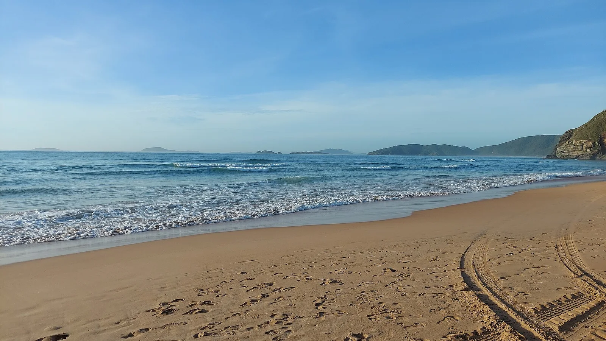

Búzios — Geribá
Rio de Janeiro, Brésil · surf, bodyboard

Sur la péninsule de Búzios, Geribá est l’une des plages consacrées au surf. Une étape de glisse dans la région de Rio de Janeiro, entre plage ouverte et quartiers de bord de mer.
- Lieu
- Rio de Janeiro, Brésil
- Niveau
- Variable selon les conditions
- Activités
- surf, bodyboard
- Type d'eau
- Mer / océan
- Coordonnées
- -22.78, -41.91 (position approximative du secteur)
Ouvrir dans Ocean Buddy Télécharger sur l'App Store
Source : Wikipédia · géographie du lieu.